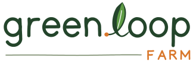
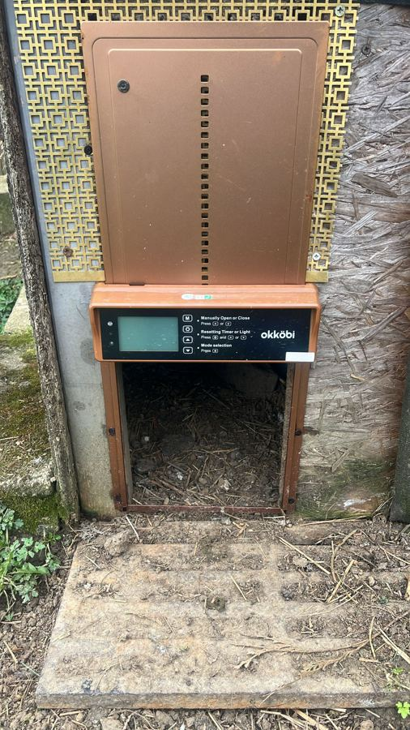
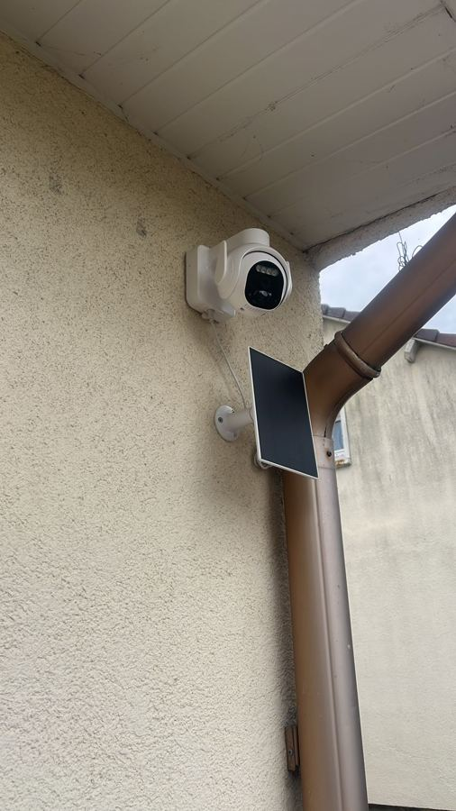
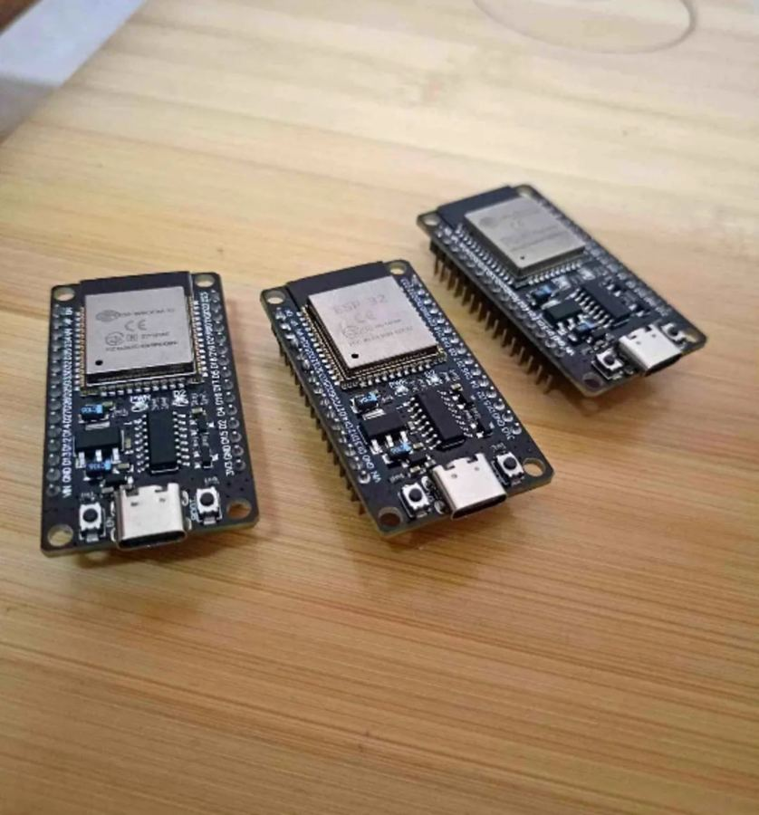

Vegetables
Potatoes, lettuce, tomatoes, broad beans and corn, picked to order.
June – October

Smart micro-farm
Vegetables, fruit, eggs, honey and snails, grown in a closed loop and watched over by cheap sensors running on the sun.

Each part of the farm feeds the next. Nothing leaves as waste.
Seasonal and in small batches. Order ahead and pick up at the farm, or ask about delivery.
Potatoes, lettuce, tomatoes, broad beans and corn, picked to order.
June – October
Free-range hen and quail eggs from birds fed on farm-grown corn.
All year
Raw honey from our 10 hives, which also pollinate the orchard.
From August
Farm-raised snails fed on vegetable trimmings, for restaurants and home cooks.
On request
See a circular farm at work: the pond, the hives, the orchard and the sensors that run it.
About 90 minutes around the whole loop, with a tasting at the end.
Pick your own vegetables and fruit in season and take them home.
A farm lunch cooked from what grows here, for families and small groups.
Hands-on sessions on food, water and smart farming for classes and startup teams.
Cheap, solar-powered hardware keeps an eye on the farm, and the plans are open so other smallholders can copy them.


Questions, wholesale snails, partnerships or press: get in touch.